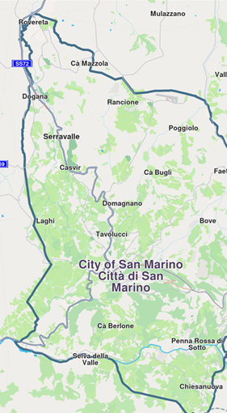

Get Started with Maps¶
Learn how to display a map view and use the GemMapController to enable additional map functionalities.
Display a Map¶
The GemMap widget, a subclass of StatefulWidget, provides powerful mapping capabilities with a wide range of configurable options. The following code demonstrates how to display a map view in your main.dart file:
import 'package:flutter/material.dart';
import 'package:unl_navigation_flutter/core.dart';
import 'package:unl_navigation_flutter/map.dart';
const projectApiToken = String.fromEnvironment('GEM_TOKEN');
void main() {
runApp(const MyApp());
}
class MyApp extends StatelessWidget {
const MyApp({super.key});
@override
Widget build(BuildContext context) {
return const MaterialApp(
debugShowCheckedModeBanner: false,
title: 'Hello Map',
home: MyHomePage(),
);
}
}
class MyHomePage extends StatefulWidget {
const MyHomePage({super.key});
@override
State<MyHomePage> createState() => _MyHomePageState();
}
class _MyHomePageState extends State<MyHomePage> {
@override
void dispose() {
GemKit.release();
super.dispose();
}
@override
Widget build(BuildContext context) {
return Scaffold(
appBar: AppBar(
backgroundColor: Colors.deepPurple[900],
title: const Text('Hello Map', style: TextStyle(color: Colors.white)),
),
body: const GemMap(
appAuthorization: projectApiToken,
onMapCreated: _onMapCreated,
),
);
}
void _onMapCreated(GemMapController mapController) {
// Code executed when the map is initialized
}
}
Use the map controller¶
The GemMap widget includes an onMapCreated callback, which is triggered once the map has finished initializing. This callback provides a GemMapController to enable additional map functionalities.
const GemMap(
appAuthorization: projectApiToken,
onMapCreated: _onMapCreated,
),💡 Tip: Multiple
GemMapwidgets can be instantiated within a single application, allowing you to display different data on each map. EachGemMapis independently controlled via its respectiveGemMapController.
Certain settings, such as language, overlay visibility, and position tracking, are shared across all GemMap instances within the application.